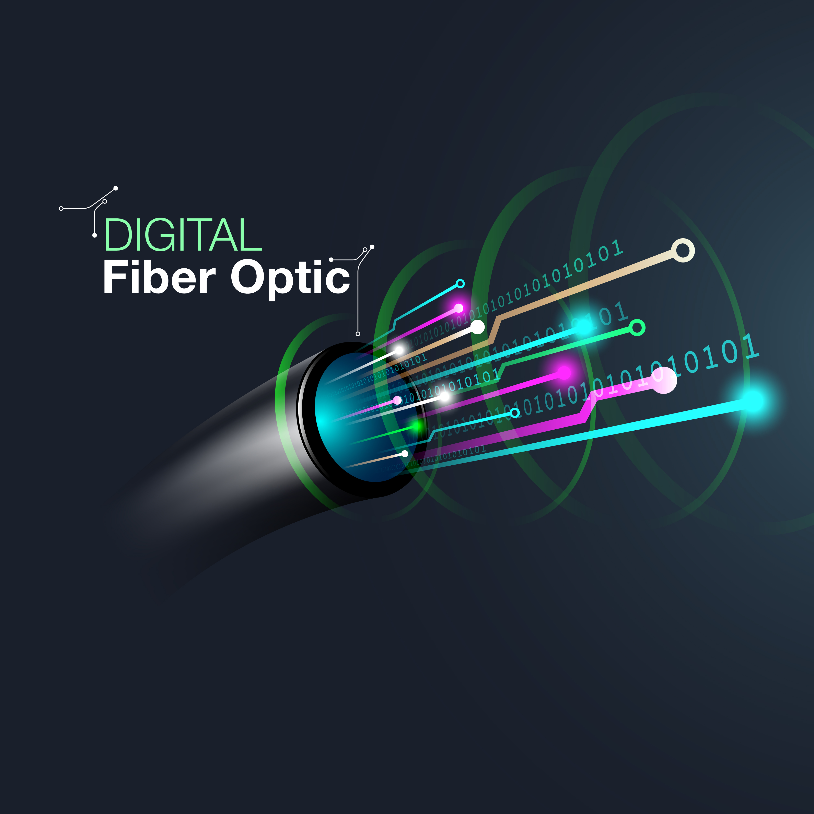
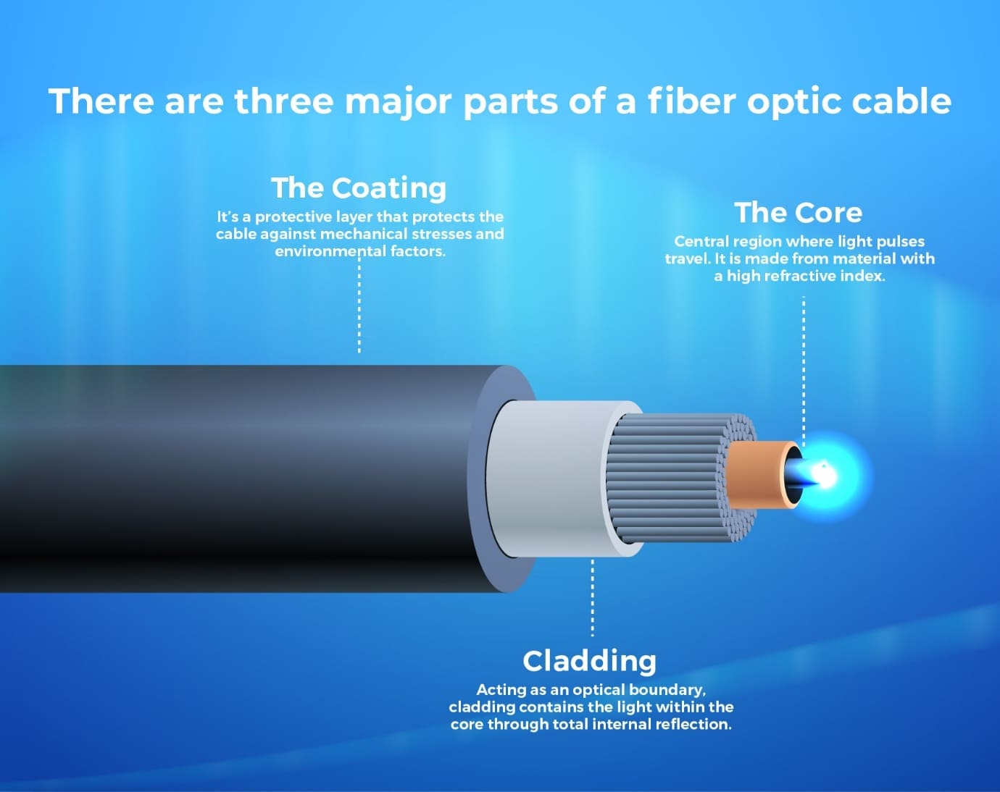
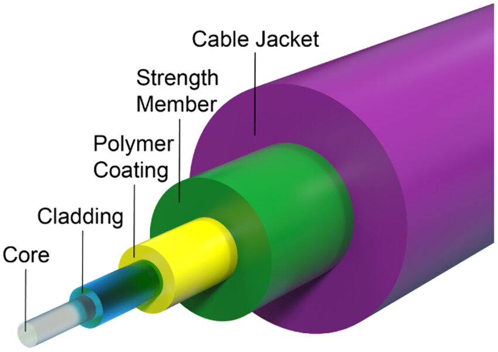

Adjust parameters to visualize signal loss in an optical fiber.
Concepts Used:
Absorption Loss: Loss of signal due to material absorption in the fiber.
Scattering Loss: Loss caused by imperfections in the fiber that scatter light.
Total Loss: The sum of absorption and scattering losses over the fiber length.
Results:

Fiber Optic Digital Cable

Major Parts of a Fiber Optic Cable

Schematic Illustration of Optical Fiber
✅ Benefits in Industry
- Telecommunications: High bandwidth and low signal loss for internet and phone systems.
- Medical Applications: Used in non-invasive procedures like endoscopy and laser surgery.
- Industrial Automation: Immune to electromagnetic interference, ensuring reliability.
- Military & Aerospace: Secure and lightweight communication systems.
- Data Centers: Rapid data transfer and high performance networking.
🔍 Facts About Optical Fiber
- Light in optical fibers travels over 200,000 km/s — nearly light speed!
- One fiber can carry 25,000+ phone calls at once.
- No interference from electrical noise unlike copper wires.
- Thinner than a human hair but extremely tough.
- The fiber optics market is projected to hit $11B+ by 2026.